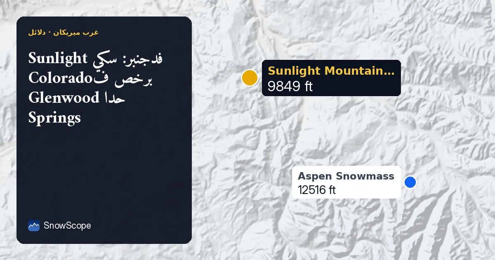
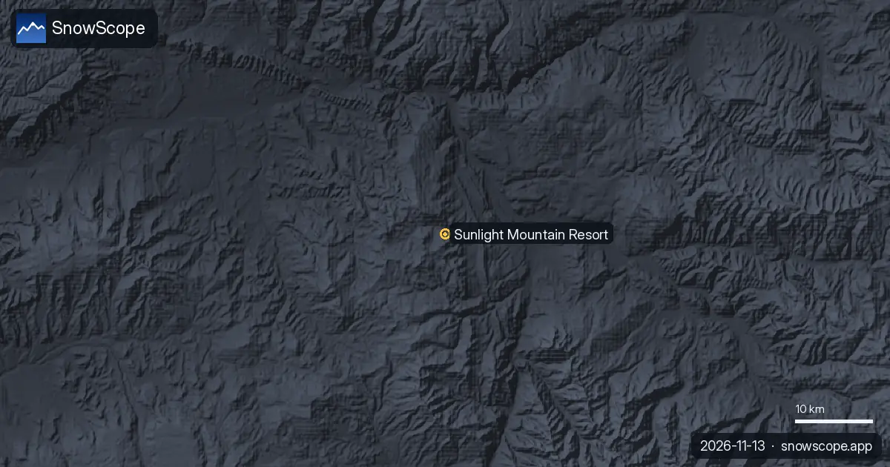

Sunlight فدجنبر: سكي برخص فColorado حدا Glenwood Springs
أول ديسمبر فـ Sunlight Mountain هي مسألة حظ. لكن بحال 15 ديسمبر، الاحتمالات كتتبدل: سنة عادية كتشوف 67 سم فـ وسط الجبل، وثلاثة من أربع شتوات كتلاقيها. الشباك الحقيقي هو من وسط ديسمبر لحد الميلاد، اللي فيه التلج كيكون عميق بزاف.
شوف توقعات التلج مباشرة ديال Sunlight Mountain Resort فالتطبيق ديال SnowScopeالعلو ديال التلج، التنبيهات والخريطة 3D، فابور.
شنو اللي كتتوقع فـ كل ارتفاع
Sunlight كترتفع من 2,480 م فـ القاعدة لحد 3,002 م فـ القمة. علو التلج هو الأهم فـ وسط الجبل حوالي 2,741 م، حيت الزليجين كيقضيو الوقت ديالهم فـ 3 تليفريك و 37 كم ديال البيستات.
فـ 1 ديسمبر، وسط الجبل عادة كيكون فيه 51 سم. بحال 15 ديسمبر كتولي 67 سم، و بحال يوم الميلاد كتولي 80 سم. القمة كتكون أعمق بزاف: 81 سم فـ 15 ديسمبر و 93 سم بحال الميلاد.

مسألة الموثوقية
ثلاثة من أربع شتوات (72 بالمائة) فيهم 50 سم أو أكتر فـ وسط الجبل بحال 15 ديسمبر. هاد الشيء كتتحسن لحد 87 بالمائة بحال يوم الميلاد. لكن فـ شتا ضعيفة، 15 ديسمبر كيمكن يكون فيه غير 34 سم — كافي للبيستات المصيانة لكن ماشي للجلادات.
موسيم البداية كصار أقل ضمان مع الوقت. فـ أول 15 شتا ديال سجلنا (1980-81 لحد 1994-95)، وسط الجبل عادة كان فيه 74 سم فـ 15 ديسمبر. آخر 15 شتا (2011-12 لحد 2025-26) متوسطهم 63 سم، والشتا اللي فاتت ولاّت فقط 35 سم. هاد الحاجة تبان ليك اللي وقت الزيارة ديالك مهم بزاف.

متاع تروح: شباك ديسمبر
أول أسبوع ديال ديسمبر ريسقة. غير 57 بالمائة ديال الشتوات فيهم ثلج صحيح وقتاك. الأسبوع الثاني كتتحسن لحد 61 بالمائة. سقزي للأسبوع الثالث (14-20 ديسمبر) و 78 بالمائة ديال السنين فيهم ظروف صحيحة. أسبوع الميلاد هو الأفضل: 87 بالمائة ديال الشتوات فيهم 50 سم أو أكتر.
إذا كنت بغيت تزور فـ وسط ديسمبر، كتجنب الرهان ديال موسيم البداية و الزحام ديال الأعياد. شري قبل 30 نونبر إذا بغيت Sunny 6 Pack: ستة تذاكر تليفريك بـ 349 دولار، لأن هاد العرض كيخلص يومك.
عروض التذاكر والبطاقات
تذاكر التليفريك الواحدة كتبدأ من 74 دولار. Sunny 6 Pack بـ 349 دولار كتخدم كل واحد قادر يشري قبل آخر الشهر. Sunlight كتاع Indy Pass، اللي غادي تكلفك 419 دولار (Indy Base، مع تواريخ محجوزة) أو 469 دولار (Indy+، بلا حجوزات)، و كتعطيك يومين فـ كل واحد ديال 300+ محطة عضوة.
Ski Cooper، 32 كم لجنوب، كتقف فـ ارتفاع أعلى و أقل رطوبة لكن عندها نفس التلج ديال وسط ديسمبر: 66 سم. Cooper كتفرض 49 دولار فـ الأيام المشتغلة أو 99 دولار فـ نهايات الأسبوع. Wolf Creek، 80 كم لجنوب، هي قائدة التلج ديال Colorado — 87 سم فـ 15 ديسمبر — لكن غالية أكتر. وسط الجبل ديال Vail كيشوف 62 سم فـ وسط ديسمبر عادي.
خلط التزلج مع الوادي
Glenwood Springs كتقف 16 كم تحت القاعدة. الينابيع الحارة الطبيعية ديال البلاد كتكون مثالية بعد يوم تزلج. الطريق لفوق ضيقة و كتدور فـ الكانيونات، فحاجتك شتايات الشتا و أيام الثلج كتسدها شوية.
هاد الخلطة — ساعات ديال التزلج متبوعة بـ حمام ساخن — فريدة بيها ما بين محطات Colorado و كتخلي Sunlight تستاهل الالتفاتة على I-70، حتى ولو ماشي محطة تقضي فيها أسبوع كامل.
نصايح للي كيتزلجو
- جنب أول ديسمبر إلا إذا كنت كتدور على أسعار منخفضة و ماشي خايف من الأماكن اللي ما فيها ثلج. قصدك 14-24 ديسمبر، اللي فيه ثلاثة من أربع شتوات فيهم ثلج صحيح فـ وسط الجبل.
- شري Sunny 6 Pack قبل 30 نونبر إذا كان هاد الوقت مناسب ليك. فـ 58 دولار للتذكرة الواحدة، كتضربها على السعر ديال 74 دولار للتذكرة الواحدة.
- جيب شتايات الشتا للطريق الضيقة ديال الكانيون من Glenwood Springs، خاصة إذا ديسمبر جاب ثلج.
- دير بالك على حمام ساخن فـ Glenwood Springs فـ الليل. الينابيع الحارة قريبة بزاف و كتشكلو إضافة رائعة للتزلج.
- شوف نشرة الانهيارات ديال Colorado قبل اللي تديري للتلج غير المصيان: https://avalanche.state.co.us/
على هاد الأرقام
العلو ديال التلج فالمحطات هو أكثر تلج فالجهة الفوقانية فالتاريخ المكتوب؛ هادو تقديرات لمنطقة، ماشي قياس فنقطة وحدة. التوقعات يمكن تتبدل. ديما شوف النشرة الرسمية ديال الانهيارات قبل ما تخرج من البيست.
النشرات الرسمية ديال الانهيارات: Colorado Avalanche Information Center
كيفاش تستاشهد بهاد المقال
للبحث، التعليم ولا الصحافة: الأرقام والرسومات تقدر تعاود تخدم بيهم بحرية تحت CC BY 4.0 مع هاد الاستشهاد.
SnowScope (2026), Sunlight فدجنبر: سكي برخص فColorado حدا Glenwood Springs, https://snowscope.app/blog/ar/2026/11/sunlight-mountain-glenwood-springs-december-value.html, تشاف ف 2026-11-15
SnowScope (Atlas Labs). (2026, November 15). Sunlight فدجنبر: سكي برخص فColorado حدا Glenwood Springs. SnowScope snow reports. https://snowscope.app/blog/ar/2026/11/sunlight-mountain-glenwood-springs-december-value.html
BibTeX
@misc{snowscope2026sunlightmountainglenwood,
author = {{SnowScope (Atlas Labs)}},
title = {Sunlight فدجنبر: سكي برخص فColorado حدا Glenwood Springs},
year = {2026},
month = nov,
howpublished = {\url{https://snowscope.app/blog/ar/2026/11/sunlight-mountain-glenwood-springs-december-value.html}},
note = {Published 2026-11-15 09:34 UTC; accessed 2026-11-15}
}· CC BY 4.0 · الطريقة، الداتا والأدوات →
Sunlight Mountain Resort: التلج والحرارة حسب العلو، هاد الشتا مقارنة مع اللي فاتت (الأدوات) →
تابع Sunlight Mountain Resort
فابور: ميساج ملي يجي التلج، والتوقعات كل صباح.